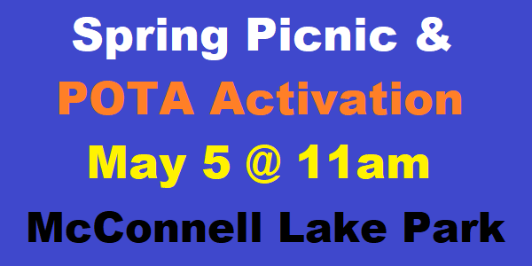
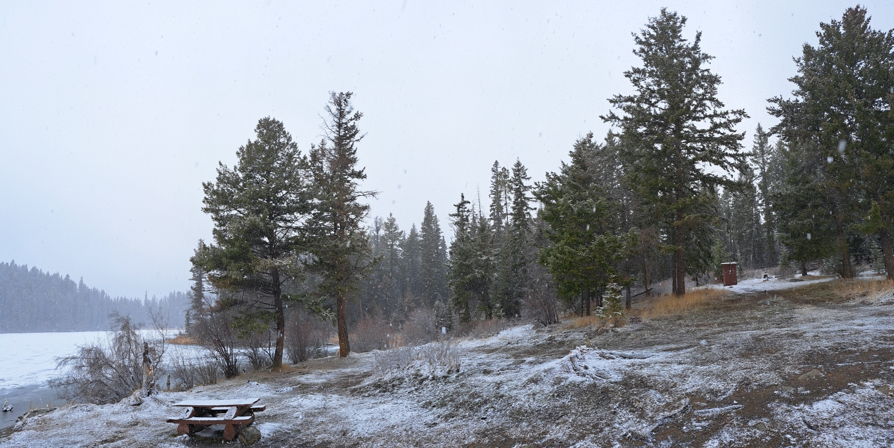
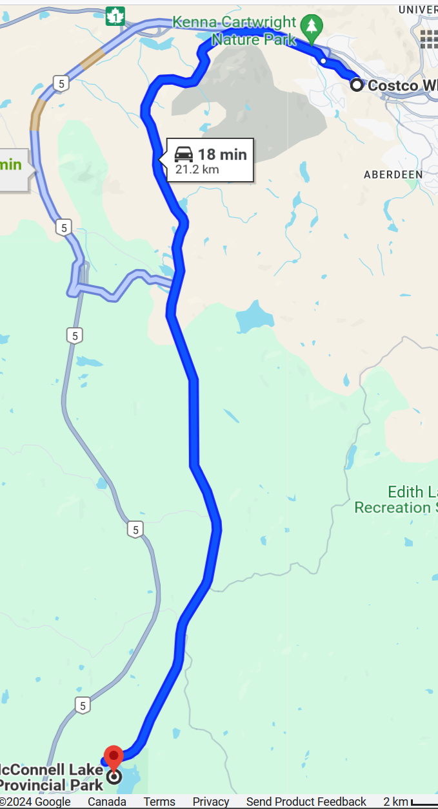

Spring Picnic and inaugural KARC POTA Activation
Back to StoriesStory 782
Wed, 2024-04-17 20:41 — VE7FSR

The KARC will be hosting the spring picnic at McConnell Lake Provincial Park on May 5 , and we will also be doing the first POTA activation under the club callsign, VE7UT.
Bring your own lawn chair and refreshments, and we will have a 2-burner Coleman stove for cooking in the event there is a campfire ban in place.
We plan to have two HF stations in operation so everyone should have a chance at the mic!

The Park is a 20 minute drive from Aberdeen on the Lac Le Jeune highway (see map below) and there is plenty of parking once you get to the Park entrance.
There are a couple of picnic tables, an outhouse, and some nice trees close by for HF antenna supports.
Bring your kayak or canoe if you feel like paddling around or doing some fishing.
We will be monitoring VE7RLO 147.320 MHz in case you need directions or have any problems finding the park.

Google Map directions for your phone are here: https://maps.app.goo.gl/Sket5GfqNKkYZQpy6 If you have any questions please contact Shane VE7JFF .
Attachment Size KARC POTA.kmz 788 bytes